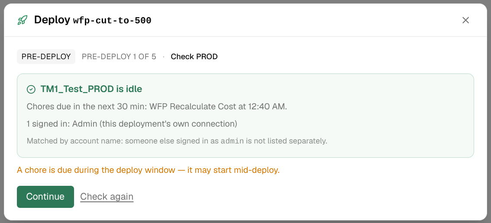
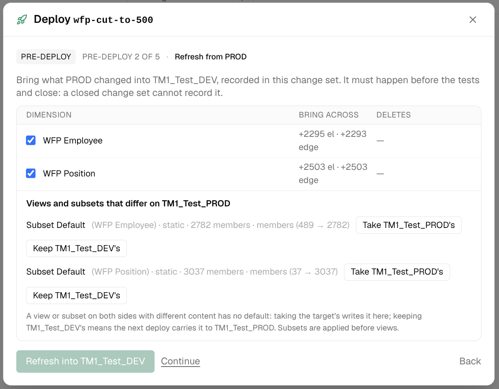
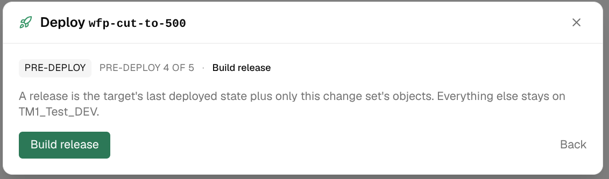
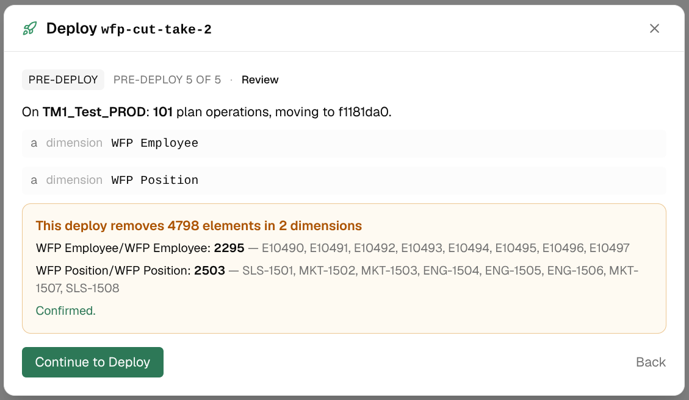
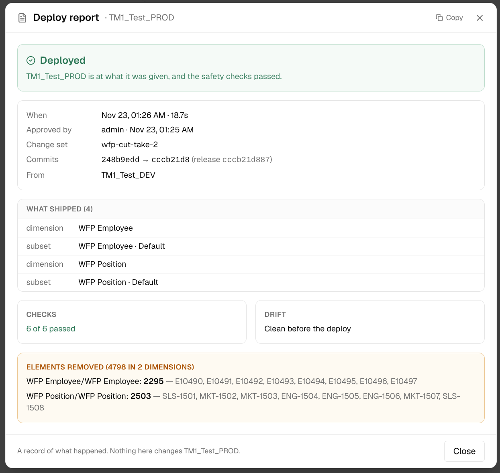
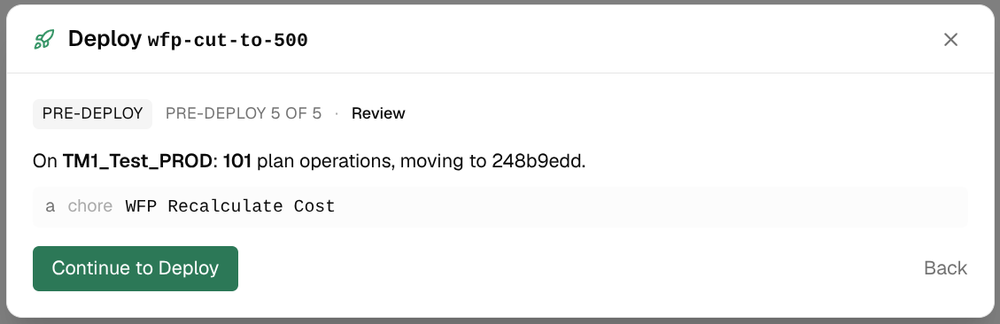

About this guide
How it fits with the IDE
This process is built into the TM1 IDE, in its Deploy section. Each step in this guide is a step on that screen. If you use a different tool, or none, you can still use this guide to learn the approach and build your own deploy process: the steps, the checks and the lessons work with any tool that talks to TM1.
Why it matters
PROD changes on its own every day. Load processes add new GL codes and employees, users save views, and operators switch chores off. A deploy that simply replaces PROD’s objects with DEV’s copies removes that work, and the data that goes with it. This guide shows how to deploy without losing it.
How we did it
We use TM1’s built-in Git to move the model from DEV to PROD. It moves objects in IBM’s own format, and if a deploy fails partway, it undoes the whole deploy. But it doesn’t do everything a deploy needs:
- it can’t send one piece of work on its own;
- it doesn’t carry attribute values or deletions;
- it replaces anything on PROD that is different from the release.
The IDE fills those gaps. The guide explains each one and how it’s handled.
The deploy in one picture
A deploy here is one process with thirteen numbered steps, 0 to 12. Step 0 happens once, when you set things up. Steps 1 to 11 happen every time a piece of work goes to PROD. Step 12 is there for when something goes wrong.
Every step in this guide starts with the same bar, so you always know where you are:
Click any number to jump to that step. Letters (A to E) are background; numbers are steps. When the text says “step 3”, it always means the same thing.
| Step | Phase | What happens | Changes |
|---|---|---|---|
| 0 | Set up | Link DEV and PROD to one Git repository and start them from the same commit | both, once |
| 1 | Develop | Build on DEV. Every save is recorded in your change set | DEV |
| 2 | Pre-deploy | Is PROD quiet? Has anyone changed it outside a deploy? | nothing |
| 3 | Pre-deploy | Bring what PROD changed by itself into DEV | DEV |
| 4 | Pre-deploy | Run the tests, close the change set, commit DEV to Git | Git |
| 5 | Pre-deploy | Build the release: PROD’s last release plus only this change set | Git |
| 6 | Pre-deploy | Say in words what will happen on PROD; stop before anything is lost | nothing |
| 7 | Deploy | Approve this exact release; state the backup | record |
| 8 | Deploy | Check PROD is still quiet | nothing |
| 9 | Deploy | Save PROD’s data to disk; run or record the backup | PROD files |
| 10 | Deploy | TM1 Git pulls the release; the IDE applies what Git can’t | PROD |
| 11 | Deploy | Check it landed; record who, what and when in PROD’s model | record |
| 12 | After | Put the design back, or the data, or DEV | as needed |
Three places hold the model: the DEV server, the Git repository and the PROD server. The IDE sits underneath and does the work. This map is the same at every step; each step lights up only its own moves, with the step number on each arrow.
Two rules under everything. A release carries exactly one change set and nothing else from DEV. And nothing is removed or cleared on PROD without an explicit yes.
To keep it concrete, one example runs through every step. The work: a developer adds a variance rule to a Finance cube (Variance = Actual − Budget), and gives some accounts a new Account Group attribute value. Meanwhile on PROD: an hourly Load Actuals chore adds new GL accounts as they appear in the ledger, with their numbers. This week it added GL 4105 Software subscriptions and loaded 3,200 against it.
A good deploy ships the rule and the attribute values, and keeps 4105 and its 3,200 on PROD.
Change sets: one person’s piece of work
A change set is the unit everything else hangs on. Think of it as a named basket. You open one before you start, and from then on every object you save on DEV is recorded in it: which object, what changed, who, when.
Why work this way
- It is individual. A change set belongs to one person on one server: the TM1 user signed in to DEV. An AI agent working through the MCP server gets its own name too, never quietly someone else’s basket. Two developers on the same DEV have two change sets.
- It is governed. Tests run against it before it can close. A closed change set becomes a permanent record in the model itself, not on someone’s laptop. Approval is given to it, and the deploy record says which change set reached PROD.
- It is built for deploying. A release is made from exactly one change set. That is what lets an approver say “I approved this, and only this, reached PROD”.
How it works
- Open a change set on DEV, with a name and a reason.
- Work normally: rules, processes, dimensions, views. The IDE records each save.
- When it’s ready, the deploy starts from it (step 2 onwards).
- Closing it (step 4) runs the tests and commits DEV to Git.
- One release, one approval and one deploy record follow, all naming the same change set.
What a change set includes, object by object
The change set records the object you saved, but TM1 Git moves whole objects, so the release carries the whole thing. This matters more than it sounds:
| You saved… | The release carries… |
|---|---|
| a rule | the cube’s rule file |
| a TI process | the whole process |
| one element, or one attribute value | the whole dimension |
| a subset | the subset, plus its dimension’s hierarchy file it can’t work without |
| a view | the view, plus its cube’s file |
Giving accounts a new Account Group value puts the Account dimension in the change set. So this release will replace PROD’s Account dimension, the one that holds GL 4105. Keep that in mind; it is why step 3 exists.
Git in five minutes, and how TM1 uses it
If you already know Git, skip to “The circle” below.
The few words you need
| Word | Plain meaning |
|---|---|
| Repository (repo) | A folder of files with a full history of every version. Ours lives on GitHub, private. |
| Commit | A saved snapshot of all the files at one moment, with who made it and why. It has an ID like cccb21d8, and it never changes. |
| Branch | A named pointer to a commit, moving forward as new commits are added. Like a bookmark called “latest DEV”. |
| Push | Send a snapshot up to the repository as a new commit. |
| Pull | Make a copy match a commit from the repository. |
| Diff | The difference between two commits, file by file, line by line. |
What TM1 Git does
TM1 has Git built in. A push writes the server’s model out as files: one file per dimension hierarchy, cube, view, subset, chore and process, with rules and TI as plain text. A pull has TM1 rebuild its model from a commit. Cube data never goes into Git, and neither do attribute values.
Each server is linked to the repository once, with a tag that says what it is: DEV, TEST or PROD. The servers can be called anything; the tag is what says which role each plays. In this guide DEV is always the source and PROD always the target.
The circle
Three branches in one repository, each with one job:
| Branch | Who writes it | When | What it’s for |
|---|---|---|---|
dev | DEV pushes its whole model | every change set close (step 4) | where the release builder takes DEV’s files from |
release-PROD | the IDE builds a commit by hand | every release (step 5) | exactly what PROD is sent. After the deploy it is “what PROD last received” |
prod-live | PROD pushes its whole model | every drift check (steps 2, 6, 11) | PROD as it really is, to compare with what it last received |
So DEV goes into Git at close; a release is made from DEV’s files on top of PROD’s last release; PROD pulls it; PROD then pushes a snapshot of itself so the next deploy can check nothing changed in between. Round and round, one change set at a time.
Two things this circle can’t do by itself, which the rest of this guide is about: notice when PROD has changed on its own, and keep those changes when a release replaces the object.
Why TM1 Git, and what it doesn’t do
Everything in this guide sits on TM1’s built-in Git integration. It is worth saying why, because its gaps are where most of the work went, and a fair reader will ask whether it was the right choice.
What we had before: our own deploy over the REST API
The first pipeline did everything itself. It read each object in the change set from DEV over the TM1 REST API, wrote it out as JSON, and rebuilt it on PROD with its own code. The scope was right: only the change set’s objects shipped. The trouble was fidelity. We were maintaining our own copy of IBM’s object format, and every object type was a new place to be wrong.
| What went wrong | Example |
|---|---|
| Attribute values lost | Replayed when the deploy created a dimension, but not on a redeploy of it. |
| Subsets collapsed | Two subsets called Default on different dimensions were treated as one. |
| Views changed on the way | An axis using a named subset came back as “all members”, so a change nobody made appeared in the package. |
| Clean-up by hand | The model grew three processes whose only job was to rebuild what the deploy had failed to carry. |
Each bug was fixable, and we fixed them. But the list was never going to end: every new object type, and every new TM1 version, would bring more.
What TM1 Git gives us
- IBM’s own format, applied by TM1 itself. A push writes cubes, dimensions, processes, rules, views and subsets as files; a pull has TM1 rebuild them. The view and subset bugs above disappear by construction, because our code no longer rebuilds anything.
- All or nothing. If a pull fails partway, TM1 rolls the whole pull back. On the worked example’s first attempt (step 12), a subset referred to an element that wasn’t there; the pull failed with “Previous operations are rollbacked”, and PROD was untouched. Code that rebuilds objects one by one over REST can’t promise that.
- History for free. Every release is a Git commit. That is what makes Return to last release and the two-copies drift check (step 2) simple: both are just “compare with, or go back to, a commit”.
- Readable changes. Rules and TI are stored as plain text, so a change is a normal Git diff, and any Git client, TM1py or PAW can read the repository.
What it doesn’t do, and who does it instead
We tested TM1 Git on a lab pair of servers before building on it. These are the gaps that testing, and later real deploys, found:
| TM1 Git doesn’t… | So… |
|---|---|
| carry attribute values | The deploy writes them itself, and only for attributes an admin has confirmed should travel. |
| delete anything | The deploy runs the change set’s deletes itself, in dependency order, after the pull. |
| notice when PROD has been changed by hand | The deploy keeps a second copy of PROD in Git and compares the two (drift, step 2). |
| ship one change set: a pull takes the whole branch | Each release is built on its own branch from the last release plus exactly one change set. |
| leave alone an object the release doesn’t mention | A pull makes every object match the release, so DEV is brought level with PROD first (Refresh, step 3). |
The honest cost
The last row is the expensive one. With our own REST code we could have added PROD’s new elements one at a time, so a dimension that PROD loads into every night would have been easy. TM1 Git replaces the dimension whole, so DEV has to hold PROD’s work before the release is built. That is the whole reason for Refresh (step 3), and Refresh is where most of the difficulty in this design lives.
There is also a dependency to state plainly: the deploy relies on how IBM’s Git integration behaves. If a TM1 update changes that behaviour, the deploy changes with it. The permanent tests behind every rule in this guide are what would catch it.
Was it the right choice? We still think so. The gaps are a short, fixed list, each filled once. The REST approach was a list that grew with every object type and every TM1 version. We would rather write one careful Refresh than maintain our own copy of IBM’s object format forever.
The full story of the move, including the discovery that a pull ships the whole branch, is in Governed TM1 deploys.
The hard part: both sides change
This section is the core of the design. Everything that took time was here.
PROD is never static
Real models change on PROD every day, and none of it is wrong:
- a load process adds new GL accounts, employees or products, with their data and attribute values;
- users save public views and subsets;
- an operator switches a chore off for month-end.
But some things must only change on DEV
Rules, TI processes, cube structure and chore steps are code. They go through DEV, a change set, tests and approval, every time. Three reasons:
- They can’t be merged. TM1 Git replaces a rule file or a process whole. If the same rule was edited on PROD and on DEV, one edit simply wins.
- They need testing. A rule typed into PROD has had no tests, no review, no approval, and leaves no change-set record.
- PROD edits block deploys. A rule or process changed on PROD is drift (step 2), and the next deploy stops until it’s resolved. The fix is always to make the same change on DEV and deploy it.
The collision
TM1 Git makes the target match the release, object by object. When PROD takes a release, every dimension in it is made identical to the release’s copy. So:
What exactly is lost? We tested it with a throwaway cube on the lab pair. A TI process on PROD loaded values and attribute values, and added a new element with its own value, the way an hourly load does. Then a release replaced the dimension, adding one element and removing another. Afterwards:
- values and attribute values on every surviving element were still there, including the element PROD’s load had created (once the refresh had carried it into the release);
- only the removed element’s values were gone;
- an attribute value DEV had changed did not reach PROD: attribute values aren’t in Git, so a release never carries them unless that attribute is confirmed to travel (step 3).
So a replacement removes what it names, not the cube. The danger is only ever the elements the release doesn’t have.
The cases, one by one
| Case | Is the dimension in the change set? | What a plain pull would do |
|---|---|---|
| Only PROD added elements, DEV didn’t touch the dimension | No | We hoped the pull would skip a dimension the release doesn’t mention. Lab tests showed it replaces it anyway if PROD’s copy differs. The drift check (step 2) catches this first and stops the deploy. |
| Both added elements: PROD loaded 4105, DEV added a new rollup | Yes | The release carries DEV’s copy, without 4105. PROD loses 4105 and its data. |
| DEV changed only an attribute value (the running example) | Yes, the whole dimension | Same as above: the dimension is replaced, so 4105 goes. |
| DEV removed elements on purpose (a closed cost centre) | Yes | This is wanted. Review (step 6) names every element and asks “Yes, remove these”. |
Ideas we tried and dropped
- Leave the dimension out of the release. Doesn’t help: the pull still replaces a dimension whose live copy differs (first row above). And when DEV changed it, it has to be in.
- Tell TM1 Git to ignore it. The per-server ignore setting is accepted but the pull doesn’t use it. The project-wide ignore drops the hierarchy file but keeps the dimension file, so the repository has a broken link and no release can be built.
- Build each release on PROD’s live copy, merged with DEV’s changes. It worked on paper. Nobody could explain it in one sentence, and every edge case needed its own rule.
What we do instead: refresh DEV first
Before the release is built, PROD’s own changes are brought into DEV (step 3), inside the open change set. The release then carries PROD’s work back to PROD, and the ordinary pull becomes safe. It is easy to explain, which turned out to be the best test of the design.
The subtle part is telling the cases apart. Comparing PROD with DEV only shows that they differ. An element on PROD and not on DEV could be one PROD just loaded, or one DEV deliberately removed. So the refresh compares three copies, using the last release as the reference:
We learned this the hard way. The first refresh compared only PROD and DEV. On the worked example (step 12) it offered to put back, ticked, the 4,798 people DEV had just removed. It was stopped only because two unanswered questions on the same screen greyed out the Refresh button. It now uses the last release, and the case is a permanent test.
Set up DEV and Git (once)
- What happens
- DEV starts as a copy of PROD. Both are linked to one Git repository with their tags. DEV’s model becomes the first commit, and PROD takes it as its first pull, which changes nothing but records where PROD starts.
- Why
- Every later step compares against a commit. Without a recorded starting point on PROD, no release can be built at all.
- Can stop here
- A first pull overwrites a whole server. It runs only on a server never deployed to, shows what it would replace, and needs you to type a sentence.
The setup, in order
- (a) Make DEV a copy of PROD, model and data. This happens in TM1, outside Git and outside the IDE: restore PROD’s backup onto a new TM1 server.
- Link each server (Deploy → GitHub setup): the repository address and the tag,
DEVfor DEV,PRODfor PROD. The Git token is kept by the IDE and passed on each call; TM1 doesn’t store it. - (b) DEV pushes the first commit: its whole model, which is PROD’s model.
- (c) PROD takes that commit as its first pull. The screen first shows what the pull would replace and remove, and you type a sentence to go ahead. Because DEV is a copy, it should say nothing is removed. This pull is what records PROD’s starting point; without it, the first release refuses to build.
- Mark PROD read-only in the IDE’s server settings (
readOnlyServers; there’s no screen for it). From then on, nothing writes to PROD except a deploy.
Read the sentence before you type it. A first pull makes PROD match DEV, completely. If DEV isn’t a faithful copy, the sentence says so: “… and removes 120 elements in 3 dimensions”. Stop there and fix DEV first.
One developer, or several
| Set-up | How it works | Status |
|---|---|---|
| One shared DEV, one shared IDE on a server | Each person signs in as themselves and gets their own change set. If two open change sets touch the same object, the IDE warns at close and deploy. | Built. Suits a small team. |
| One shared DEV, an IDE each on their laptops | Works, but open change sets are kept by each IDE, so the overlap warning can’t see the other person’s open work. Closed change sets and deploy records are in the model, so everyone sees those. | Works, with that gap. |
| A DEV server each | Each person builds their own DEV from the repository. The cleanest isolation; it needs a way to bring work together before PROD. | Designed, not built. |
One physical limit applies to any shared DEV: TM1 pushes the whole server. If two people edit the same object, they edit the same copy. Agree who owns shared objects.
DEV, TEST, PROD
The same process works with a TEST server in between, because TEST is just another target with its own tag and its own release branch.
- Make TEST a fresh copy of PROD, model and data, the same way DEV was made above, and link it tagged
TEST. Do this before each test cycle, or TEST drifts away from PROD and proves nothing. - Deploy the change set DEV → TEST, steps 2 to 11. Because TEST started from PROD’s last release, its release holds the same change PROD’s will.
- Test on TEST, with real-shaped data.
- Deploy the same change set DEV → PROD. A new release and a new approval, built against PROD’s own last release.
We have run the DEV → PROD loop end to end on a lab pair. The TEST loop uses the same pieces but hasn’t been run on the lab yet.
Work in a change set
- What happens
- You build on DEV with a change set open. Every save is recorded in it.
- Why
- The change set is what the release, the approval and the record are all made from. Work saved outside one isn’t tracked, and won’t ship.
- Can stop here
- Nothing stops here. The checks come later.
Work as you normally would. A few habits make the later steps smooth:
- Keep a change set to one purpose. “Variance rule and account groups” is fine. “Everything this month” makes Review hard to read and approval meaningless.
- Write the test with the change. A change set carries the tests that prove its change (see step 4).
- Make changes through the IDE or MCP, not through other tools on DEV. A change made elsewhere isn’t recorded, so it isn’t in the change set and isn’t ordered against other people’s work.
The developer opens change set Finance variance, adds the rule ['Variance'] = N: ['Actual'] - ['Budget']; with its feeder, and sets Account Group on twelve accounts. The change set now lists the Finance cube’s rules and the Account dimension.
Check PROD is idle
- What happens
- The IDE checks PROD is quiet, and whether anyone changed PROD outside a deploy since the last one (drift).
- Why
- A pull replaces objects while TM1 is running. If a load is halfway through, it can fail or leave half-loaded data. And deploying on top of an unexplained PROD change would quietly overwrite it.
- Can stop here
- Something running: stops. A chore due within 30 minutes: asks Deploy anyway or Wait. Rules, TI, cube or chore steps changed on PROD: stops.
prod-live, compared with what it last received.Open the deploy from Deploy → Ready to ship, choose the change set and the target, and start.

Is it idle?
“Idle” means no process or chore is running on PROD now, and none is about to start.
| Finds | Then |
|---|---|
| A process or chore running now | Stops, naming what’s running and for how long |
| A chore due within 30 minutes | Asks: Deploy anyway, or Wait. You can’t continue until you choose. |
| Other people signed in | Lists them and asks you to confirm. The deploy’s own connection isn’t counted. |
It is 10:52. Load Actuals runs on the hour, so the check says it is due in 8 minutes. If the deploy replaced the Account dimension at 11:00 while the load was inserting new accounts into it, the load could fail or write half its data. Choose Wait, and start again at 11:05 when the load has finished.

Drift: has PROD changed outside a deploy?
Git holds two copies of PROD: release-PROD, what PROD last received, and prod-live, a snapshot PROD pushes of itself right now. The difference between them is drift.
- Rules, processes, cube structure, chore steps changed, or an object missing: deploys pause. Make the same change on DEV in a change set, or put PROD back. Nothing is reverted automatically: every automatic revert we tried opened a new way to lose work.
- Views and subsets that differ: reported, not blocking. Step 3 deals with them.
- A dimension PROD added to (the loaded GL code): allowed through only if the release carries it back, which is what step 3 arranges.
What drift can’t see. Attribute values aren’t in Git, so drift never sees them. Step 3 reads them live instead.
Refresh DEV from PROD
- What happens
- The IDE compares the last release, PROD now and DEV now, lists what PROD changed by itself, and writes your choices into DEV, recorded in this change set.
- Why
- The release will replace PROD’s copy of every object in it. If DEV doesn’t already hold PROD’s own work, the deploy wipes it (background E).
- Can stop here
- Anything that can’t be read safely is refused with a reason, never guessed. With no last release to compare against, nothing is preselected and applying is refused.
This must happen before tests and close: a closed change set can’t record anything.
The rule
| Last release | PROD now | DEV now | Meaning | Refresh |
|---|---|---|---|---|
| – | has it | – | PROD added it | offered, ticked |
| has it | – | has it | PROD removed it | offered, unticked: “delete on DEV too?” |
| has it | has it | – | DEV removed it | not offered. One grey line; Review reports the removal |
| – | – | has it | DEV added it | not a refresh question: the deploy carries it |
| same | changed | same | PROD changed it | offered, ticked |
| same | same | changed | DEV changed it | not offered: DEV’s version ships |
| same | changed | changed differently | both changed it | conflict, no default |
| – | has it | has it | both have it already | nothing to do |
What it covers
| Object | Compared | Notes |
|---|---|---|
| Dimensions | elements, element types, parent–child links and weights, moves | A move is judged on PROD’s parent against the last release’s. A type change stays a decision with its warning: it clears stored values. |
| Alternate hierarchies | members, links, weights; a hierarchy PROD created | Same rule. |
| Views and subsets | content at each of the three | Both changed: Take PROD’s or Keep DEV’s, no default. A view or subset PROD deleted since the last release: offered, unticked. |
| Chores | schedule | The schedule can come from PROD. The on/off switch is never copied: DEV’s chores stay off (see step 10). |
| Attributes | definitions and values, read live | Attributes aren’t in Git, so there’s no last release to compare with. They’re listed, never preselected; an admin can tick one by hand. Values travel only for attributes confirmed under Deploy → Protection. |
Not refreshed: rules, processes and cube structure. These belong to DEV (background E). A PROD edit to one is drift and stops at step 2.
The refresh lists Account: GL 4105, added by PROD, ticked. You keep the tick and apply. 4105 is created on DEV under the same parent, and recorded in Finance variance. Your twelve Account Group values are DEV’s own change, so they aren’t listed. PROD’s 3,200 against 4105 stays where it is: the refresh writes only to DEV.
About the screenshot below. It was taken before the three-way compare, so it lists PROD’s extra elements as things to bring across. The screen now shows them as “removed on DEV, not offered”. It will be replaced.

Tests and close
- What happens
- The model’s tests run on DEV. If they pass, the change set closes and DEV is pushed to the
devbranch. - Why
- A deploy should only carry work that has proved itself. Closing fixes the change set, so what is approved is exactly what was tested.
- Can stop here
- A failing test of severity block stops here, and the change set stays open. A failing warn test is recorded but doesn’t stop.
dev branch.Tests that stay true
This part changed the most while building the deploy, and it is worth explaining.
The problem. The workforce model in our lab had 60 tests, all of the form “this query returns this exact number”, all reading the shared DEV data. When the data changed (a rebuild, a reseed, cutting the model down), 25 went red at once. Nobody could tell the model is wrong from the data changed: both look identical. The only quick fix was to overwrite the expected numbers, which quietly turns a test into one that always passes.
The fix is not better numbers. It is three kinds of check, each with its own contract:
| Kind | Input | Expected | Runs | Blocks? |
|---|---|---|---|---|
| Structure | any data | a relationship: a total minus the sum of its children is 0; every cube has a Default view | at close, and on PROD after every deploy (step 11) | yes |
| Calculation | data the test writes itself | an exact number, worked out by hand | at close, on DEV | yes |
| Quality | whatever is in the model | a threshold or range | on a schedule, in Model health | no, it warns the data owner |
The rule that keeps them apart: if you can’t state it without a number that depends on today’s data, it isn’t a gate.
- A calculation check brings its own data. Before it runs, a small TI process writes a known input into a reserved
Testversion, hidden from users and never in reports. One employee: salary, grade, pension rate. The check then asks for one answer, worked out by hand. It rewrites its inputs every run, so there’s nothing to clean up. - Structure checks run anywhere, because they never depend on what the data is. That’s why they’re the ones run on PROD after a deploy.
- The data has an identity. The test data is recorded with the tests. Changing it is a deliberate, recorded event, so a red test is always either “the model changed” or “the data changed”, and the record says which.
- The tests live in the model, so every tool, and every copy of the IDE, sees the same ones.
Where the lab model is now. Its 60 tests are being re-sorted into these kinds. On DEV, 36 pass and 24 fail as warnings: three are known calculation bugs; 21 are group totals written for the old dataset. On PROD, which has the structure but not DEV’s workforce data, 18 pass, which is exactly why calculation checks don’t run there.
The change set carries one calculation check: put Actual 100 and Budget 80 on a test account in the Test version, expect Variance 20. Plus a structure check: Variance at Total Accounts equals the sum of its children. Both pass; the change set closes; DEV is pushed to dev.

Build the release
- What happens
- The IDE builds the release on the
release-PRODbranch: PROD’s last release, plus only the files of objects this change set touched, taken from DEV’s commit. - Why
- This is what makes “one change set per deploy” true. Anything else that happens to be on DEV, such as another person’s half-finished work, stays behind.
- Can stop here
- An older change set touched the same object and isn’t deployed yet. A newer change to the same object is already on PROD. A file carried along has changes nobody recorded.
dev.A release also carries what an object can’t work without: a subset carries its dimension’s hierarchy file, a view its cube’s file, an MDX view its query text.
Order across change sets
Two change sets can touch the same object. Deployed in the wrong order, the older one would bring back something the newer one changed or removed. So shared objects deploy in the order the changes were made.
The order comes from the change log: for each object, when each change set last changed it. Close dates aren’t used, because a set can be closed long after the edit that matters. A change set that turns out to change nothing is recorded “nothing to deploy, done”, so it doesn’t hold up the sets behind it.
Anything DEV changed that this release won’t carry is listed by name, with an option to include it.
The release holds two objects: the Finance cube’s rule file and the Account dimension. DEV’s Account dimension now includes GL 4105, because step 3 put it there. Another developer’s open work on a Sales process is listed as “left on DEV” and doesn’t ship.

Review
- What happens
- Review says in words what will happen on PROD, and compares the release with PROD as it is now.
- Why
- This is the last look before anything is sent. Where the deploy would destroy something, it stops and waits for an explicit yes.
- Can stop here
- Elements removed: “Yes, remove these”. A leaf element becoming a consolidation: “Yes, change these”. A view or subset changed on both sides: choose whose. Say no, and nothing is deployed.
Review lists each object: replace dimension Account, change rules Finance, add subset Default, delete process …, with how many objects are already identical. It also lists any dimension that differs between DEV and PROD but isn’t in this deploy, with both element counts.
The quiet one: giving a leaf element children. TM1 turns it into a consolidation and clears every value stored against it, with no warning of its own. Review makes that warning.
Belt and braces. A removal is decided twice: at the refresh (never preselected) and again here, against PROD as it is at this moment.
Review: replace dimension Account (it includes PROD’s 4105, carried back), change rules Finance. No elements removed, no type changes, so there is nothing to confirm.

Approve
- What happens
- You approve this exact release, and state the backup.
- Why
- Approval has to mean something: the approver sees what ships, and only that ships. If anything changes after approval, it no longer matches.
- Can stop here
- If DEV or the release changes after you approve, the deploy refuses and asks for a new approval.
- The approval is bound to the release. It names the release’s commit. A different commit needs a new approval.
- The backup. If a backup process is set for PROD (Deploy → Protection), it will run in step 9 and a failure stops everything. If not, you enter when PROD was last backed up, and that time is recorded.
- What “Return to last release” can undo is shown here: model objects, not data (step 12).

Idle check again
- What happens
- The idle check from step 2 runs again, just before anything is sent.
- Why
- Pre-deploy can take a while: reading Review, getting an approval. A load can start in the meantime.
- Can stop here
- Something running now: stops. Nothing has been sent.
By the time the approval comes through it’s 11:58. Load Actuals is due at 12:00, so the check asks again. Wait for it, then press Deploy.
The idle check is a snapshot. Something can still start in the few seconds between this check and the pull. The window is small, not zero.
Save Data and backup
- What happens
- PROD writes its data to disk (Save Data), then the backup process runs, or the stated backup time is recorded.
- Why
- A deploy carries objects, not data. If data is ever lost, only a backup brings it back. So the backup is taken before the pull, never after.
- Can stop here
- Save Data fails: stops. The backup process fails: stops. Nothing has been sent.
Save Data matters on its own too: TM1 holds recent changes in memory and the transaction log. Writing them to disk first means a restart, or a restore, starts from the latest data.
Send
- What happens
- TM1 Git pulls the release onto PROD, all or nothing. Then the IDE applies what Git doesn’t carry.
- Why
- The pull moves model objects in IBM’s own format. Subsets, views, deletes and attribute values have to be applied separately (background D).
- Can stop here
- If the pull fails, TM1 rolls the whole pull back and PROD is unchanged. A refused delete, or an object that didn’t land, marks the deploy failed.
In order
- Note PROD’s chore switches. Which chores are on and off, before anything changes.
- The pull. Every object in the release is made identical to the release’s copy.
- Put the chore switches back as PROD had them. DEV’s chores are kept off so they never run on DEV; the switch on PROD is PROD’s decision, not the release’s.
- Subsets, then views, from the release’s files.
- Attribute values, only for attributes confirmed under Deploy → Protection.
- Deletes, in a safe order: views, subsets, chores, processes, cubes, then dimensions. A chore goes before the process it runs. A delete TM1 refuses is a failure, never a quiet skip; an object already gone counts as done.
The pull replaces the Finance rules and the Account dimension. Account arrives with 4105, because the release carried it. The twelve Account Group values are written. Load Actuals is switched back on, as PROD had it.
Verify and record
- What happens
- The IDE checks each object landed, that PROD now matches what it was given, and runs PROD’s structure checks. The deploy record is written into PROD’s model.
- Why
- A deploy that “finished” isn’t the same as one that worked. And the record is what audit, the next drift check and Return to last release all rely on.
- Can stop here
- An object missing, or a structure check failing, is reported: “deployed, but the model no longer computes correctly”.

Details opens the deploy report: who approved it, what shipped, the checks, drift, and every element removed. The same record is kept in PROD’s model under Applications/Governance, so any copy of the IDE pointed at PROD sees the same history.

Checks pass; drift is clear. On PROD, 4105 is still there with its 3,200, Variance calculates, and the next hourly load runs as normal.
If it goes wrong
- What happens
- Put things right: PROD’s design, PROD’s data, or DEV.
- Why
- Different things come back different ways. Knowing which before you start saves the wrong fix.
- Can stop here
- —
| Situation | What to do |
|---|---|
| The deploy stopped before sending | Nothing reached PROD. Read the reason, fix it, and start again from step 2. |
| A delete failed | The report lists it. Fix the cause; an admin re-runs only that release’s recorded deletes, and the re-run is logged. (No button for this yet.) |
| PROD’s design is wrong after a deploy | Return to last release (Deploy → Drift, admin only): a new release that puts PROD’s model objects back as they were, approved and recorded, with a warning if it would remove elements. |
| Data was lost | Return to last release doesn’t restore data. Values cleared by a removal or a type change come back only from the backup taken in step 9. |
| DEV is in a mess | Inside an open change set, the change log keeps a before-and-after copy of each save, so a changed object can be put back. For a whole DEV, rebuild a DEV server from the repository (step 0) and restore its data. Putting an existing DEV back to, say, last Tuesday isn’t a single button yet. |
A worked example: PROD cut to 500 people
The lab’s workforce model on DEV had been trimmed to about 500 employees and positions. PROD still had 2,785 employees and 3,040 positions, all test data. The goal: bring PROD down to match.
- First attempt. DEV had been cut earlier, outside this change set, so the set didn’t own the two dimensions. So the release carried a chore and subsets, but not the dimensions. One try failed inside the pull with a subset error, and TM1 rolled the whole pull back: PROD was untouched. Review now lists this case: “not in this deploy: WFP Employee (DEV 489, PROD 2,782 elements)”, with an option to include it.
- Second attempt, step 2: idle; a chore due inside the window was noted.
- Step 3: the refresh at that time compared only PROD with DEV, so it listed the 4,798 removed people as things PROD had, ticked to bring back. They weren’t brought back only because two unanswered subset questions greyed out the Refresh button, and Continue was pressed instead. With the three-way compare, the same screen now shows “WFP Employee: 2,295 removed on DEV, not offered”.
- Step 4: 36 of 60 tests passed; the 24 failures were warnings (the test kinds are explained in step 4).
- Step 5: the two dimensions and their Default subsets, included this time.
- Step 6: stopped at “This deploy removes 4,798 elements in 2 dimensions”. Confirmed.
- Steps 7–11: approved, idle, Save Data, backup time recorded, pull, subsets applied, verified. All checks passed, drift clean, about 19 seconds.

What we found, in the order we found it
Each of these was found by testing on live servers, most of them by walking through the deploy step by step and asking “what happens to PROD’s work here?”. They apply to anyone deploying TM1 with Git, whatever tool sits on top.
A pull ships the whole branch, not a change set
- Example
- Developer A deploys one process; developer B’s half-finished rules on the same DEV go too.
- Found by
- Reading the lab evaluation again after a week of building on it.
- Now
- Each release is built by hand: the last release plus one change set’s files (step 5).
Some objects don’t travel through Git at all
- Example
- Attribute values, deletes, and on a pull, subsets and views.
- Found by
- Lab evaluation: a value change produced an empty commit; a deleted process stayed on PROD.
- Now
- The IDE applies them after the pull (step 10).
A pull replaces every object whose live copy differs
- Example
- A GL code loaded on PROD overnight is gone after the next deploy, with its data.
- Found by
- A lab test with a dimension the release didn’t even mention.
- Now
- Drift stops it (step 2); the refresh carries PROD’s work back (step 3).
Git’s ignore settings can’t protect an object
- Example
- Per-server ignore is accepted and does nothing; project ignore breaks the repository.
- Found by
- Lab tests of both.
- Now
- Dropped (background E).
Giving a leaf children clears its data
- Example
- An account that becomes a rollup loses every value stored on it.
- Found by
- Walking through what a dimension change does to stored cells.
- Now
- Review stops and asks (step 6).
Order matters across change sets
- Example
- An older set deployed last brings back a subset a newer set changed.
- Found by
- Two lab change sets on the same subset.
- Now
- Order check by change time (step 5).
A refused delete could look like success
- Example
- A process TM1 refused to delete, because a chore still used it, showed as “skipped”.
- Found by
- Cleaning up the lab through the pipeline.
- Now
- Deletes run in dependency order; a refusal is a failure (step 10).
A change set with nothing to ship blocked the queue
- Example
- A set whose changes already matched PROD could never deploy, and the sets behind it waited forever.
- Found by
- Ordering several lab sets.
- Now
- Recorded “nothing to deploy, done” (step 5).
Comparing two copies can’t tell who made a change
- Example
- The refresh offered to put back 4,798 people DEV had deliberately removed.
- Found by
- Asking why a screen had needed only Continue.
- Now
- Three-way compare against the last release (step 3).
“What PROD last received” can go stale
- Example
- Building a release moves the release branch before the deploy; another copy of the IDE may have deployed since.
- Found by
- The three-way refresh refusing every plan after a build.
- Now
- Cross-checked against the branch; a disagreement is refused, never guessed. A dedicated “deployed” marker in Git is next.
A pull that fails rolls back cleanly
- Example
- The first attempt of the worked example failed partway; PROD was untouched.
- Found by
- The worked example (step 12).
- Now
- Relied on: a failed pull needs no clean-up.
A first pull overwrites a whole server
- Example
- Pointing an existing PROD at the repository and pulling makes it match whatever DEV pushed, completely.
- Found by
- Lab evaluation.
- Now
- First pull only on a never-deployed server, after DEV was made a copy of PROD, with a typed sentence that names anything it would remove (step 0).
Tests that read today’s data can’t tell a broken model from new data
- Example
- 25 tests went red when the lab data was rebuilt.
- Found by
- Rebuilding the lab model.
- Now
- Three kinds of check (step 4).
Replacing a dimension keeps the data of elements that survive
- Example
- Values and attribute values on surviving elements, including one PROD’s own load created, were unchanged after a release replaced the dimension.
- Found by
- A throwaway cube loaded by a TI on PROD, then a release that added one element and removed another.
- Now
- Relied on: the danger is only the elements a release doesn’t have, which Review names (step 6).
A new element can’t take data in the same TI section that creates it
- Example
- A test load added an element and wrote to it in one section; the write failed with “Invalid key”.
- Found by
- The data-survival test for this guide.
- Now
- Add elements in Prolog or Metadata, write in Data or Epilog: as a real load does.
Limits, stated plainly
- Changes made outside the change log aren’t ordered. An edit in another tool, or by a TI process on DEV, shows up later as a difference, not as an order conflict.
- The idle check is a snapshot (step 8).
- The backup is only as good as the backup process. Without one, the deploy records the time you enter; it can’t check the backup exists.
- Attributes have no last release to compare with, because they aren’t in Git. The refresh lists them but never preselects them.
- Cube data doesn’t move. A deploy carries model objects and the attribute values you’ve confirmed, nothing else.
- It depends on how IBM’s Git behaves. A TM1 update could change it; the permanent tests are what would catch that.
- Some things deploy on their own path: Lens screens have their own governed deploy, and an admin-only catch-up brings a whole server level with DEV in one release.
How we tested this. On a TM1 v11 DEV + PROD lab pair, with throwaway objects for every probe and full deploys of a lab model. The ideas don’t depend on a particular tool: anything that keeps a change log and talks to the TM1 REST API can apply them. The working version is in the open-source TM1 IDE.
Related: Governed TM1 deploys (why releases ship one change set) · Deploying Lenses